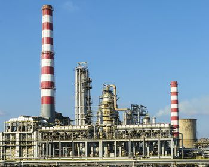

Questões Ambientais
Escassez Extrema de Água
O país não possui rios ou lagos permanentes. O forte uso de aquíferos subterrâneos para a agricultura e o consumo doméstico excede a taxa de reposição natural. Para suprir a demanda, o país é o maior produtor de água dessalinizada do mundo, processo que consome muita energia e produz salmoura tóxica que polui o ecossistema marinho.
Desertificação e Degradação do Solo
Com cerca de 98% de seu território formado por desertos, o país sofre com a degradação de suas limitadas terras cultiváveis e a expansão das áreas áridas. A situação é agravada pelas frequentes tempestades de poeira e secas severas.
Indústria Petrolífera e Poluição do Ar
Indústria Petrolífera e Poluição do Ar: Como um dos maiores produtores e consumidores de petróleo do mundo, a Arábia Saudita enfrenta altos níveis de emissões de gases de efeito estufa e poluição atmosférica nas áreas urbanas. O país tem registrado aumentos de temperatura acima da média global.
Gestão de Resíduos
O alto padrão de vida e o uso intenso de plásticos de uso único criam um enorme volume de lixo urbano. A reciclagem é limitada e a maior parte dos resíduos acaba em aterros sanitários que estão operando perto da capacidade máxima.
O alto padrão de vida e o uso intenso de plásticos de uso único criam um enorme volume de lixo urbano. A reciclagem é limitada e a maior parte dos resíduos acaba em aterros sanitários que estão operando perto da capacidade máxima.